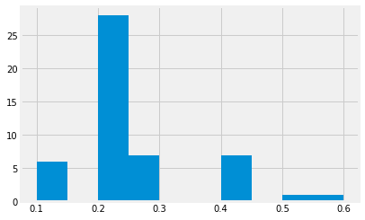
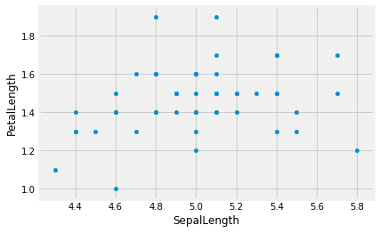
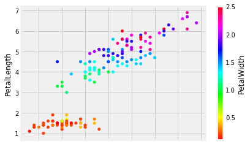

Data frames
Data Frames
By Alex Jermakov
We will start, as usual, by importing all the libraries we need.
import pandas as pd
import numpy as np
import matplotlib.pyplot as plt
%matplotlib inline
# Fancy plots
plt.style.use('fivethirtyeight')
Now we are going to need some data. Go ahead and download iris.csv and import it as a dataframe (save the file to the same directory from which you are running this notebook to make your life easier).
iris = pd.read_csv('iris.csv')
At this moment we have no clue about what data are contained inside this dataframe. First thing we can do is simply print out the whole dataframe.
iris
| SepalLength | SepalWidth | PetalLength | PetalWidth | Name | |
|---|---|---|---|---|---|
| 0 | 5.1 | 3.5 | 1.4 | 0.2 | Iris-setosa |
| 1 | 4.9 | 3.0 | 1.4 | 0.2 | Iris-setosa |
| 2 | 4.7 | 3.2 | 1.3 | 0.2 | Iris-setosa |
| 3 | 4.6 | 3.1 | 1.5 | 0.2 | Iris-setosa |
| 4 | 5.0 | 3.6 | 1.4 | 0.2 | Iris-setosa |
| 5 | 5.4 | 3.9 | 1.7 | 0.4 | Iris-setosa |
| 6 | 4.6 | 3.4 | 1.4 | 0.3 | Iris-setosa |
| 7 | 5.0 | 3.4 | 1.5 | 0.2 | Iris-setosa |
| 8 | 4.4 | 2.9 | 1.4 | 0.2 | Iris-setosa |
| 9 | 4.9 | 3.1 | 1.5 | 0.1 | Iris-setosa |
| 10 | 5.4 | 3.7 | 1.5 | 0.2 | Iris-setosa |
| 11 | 4.8 | 3.4 | 1.6 | 0.2 | Iris-setosa |
| 12 | 4.8 | 3.0 | 1.4 | 0.1 | Iris-setosa |
| 13 | 4.3 | 3.0 | 1.1 | 0.1 | Iris-setosa |
| 14 | 5.8 | 4.0 | 1.2 | 0.2 | Iris-setosa |
| 15 | 5.7 | 4.4 | 1.5 | 0.4 | Iris-setosa |
| 16 | 5.4 | 3.9 | 1.3 | 0.4 | Iris-setosa |
| 17 | 5.1 | 3.5 | 1.4 | 0.3 | Iris-setosa |
| 18 | 5.7 | 3.8 | 1.7 | 0.3 | Iris-setosa |
| 19 | 5.1 | 3.8 | 1.5 | 0.3 | Iris-setosa |
| 20 | 5.4 | 3.4 | 1.7 | 0.2 | Iris-setosa |
| 21 | 5.1 | 3.7 | 1.5 | 0.4 | Iris-setosa |
| 22 | 4.6 | 3.6 | 1.0 | 0.2 | Iris-setosa |
| 23 | 5.1 | 3.3 | 1.7 | 0.5 | Iris-setosa |
| 24 | 4.8 | 3.4 | 1.9 | 0.2 | Iris-setosa |
| 25 | 5.0 | 3.0 | 1.6 | 0.2 | Iris-setosa |
| 26 | 5.0 | 3.4 | 1.6 | 0.4 | Iris-setosa |
| 27 | 5.2 | 3.5 | 1.5 | 0.2 | Iris-setosa |
| 28 | 5.2 | 3.4 | 1.4 | 0.2 | Iris-setosa |
| 29 | 4.7 | 3.2 | 1.6 | 0.2 | Iris-setosa |
| ... | ... | ... | ... | ... | ... |
| 120 | 6.9 | 3.2 | 5.7 | 2.3 | Iris-virginica |
| 121 | 5.6 | 2.8 | 4.9 | 2.0 | Iris-virginica |
| 122 | 7.7 | 2.8 | 6.7 | 2.0 | Iris-virginica |
| 123 | 6.3 | 2.7 | 4.9 | 1.8 | Iris-virginica |
| 124 | 6.7 | 3.3 | 5.7 | 2.1 | Iris-virginica |
| 125 | 7.2 | 3.2 | 6.0 | 1.8 | Iris-virginica |
| 126 | 6.2 | 2.8 | 4.8 | 1.8 | Iris-virginica |
| 127 | 6.1 | 3.0 | 4.9 | 1.8 | Iris-virginica |
| 128 | 6.4 | 2.8 | 5.6 | 2.1 | Iris-virginica |
| 129 | 7.2 | 3.0 | 5.8 | 1.6 | Iris-virginica |
| 130 | 7.4 | 2.8 | 6.1 | 1.9 | Iris-virginica |
| 131 | 7.9 | 3.8 | 6.4 | 2.0 | Iris-virginica |
| 132 | 6.4 | 2.8 | 5.6 | 2.2 | Iris-virginica |
| 133 | 6.3 | 2.8 | 5.1 | 1.5 | Iris-virginica |
| 134 | 6.1 | 2.6 | 5.6 | 1.4 | Iris-virginica |
| 135 | 7.7 | 3.0 | 6.1 | 2.3 | Iris-virginica |
| 136 | 6.3 | 3.4 | 5.6 | 2.4 | Iris-virginica |
| 137 | 6.4 | 3.1 | 5.5 | 1.8 | Iris-virginica |
| 138 | 6.0 | 3.0 | 4.8 | 1.8 | Iris-virginica |
| 139 | 6.9 | 3.1 | 5.4 | 2.1 | Iris-virginica |
| 140 | 6.7 | 3.1 | 5.6 | 2.4 | Iris-virginica |
| 141 | 6.9 | 3.1 | 5.1 | 2.3 | Iris-virginica |
| 142 | 5.8 | 2.7 | 5.1 | 1.9 | Iris-virginica |
| 143 | 6.8 | 3.2 | 5.9 | 2.3 | Iris-virginica |
| 144 | 6.7 | 3.3 | 5.7 | 2.5 | Iris-virginica |
| 145 | 6.7 | 3.0 | 5.2 | 2.3 | Iris-virginica |
| 146 | 6.3 | 2.5 | 5.0 | 1.9 | Iris-virginica |
| 147 | 6.5 | 3.0 | 5.2 | 2.0 | Iris-virginica |
| 148 | 6.2 | 3.4 | 5.4 | 2.3 | Iris-virginica |
| 149 | 5.9 | 3.0 | 5.1 | 1.8 | Iris-virginica |
150 rows × 5 columns
But more often than not we don’t need to see ~60 entires to get
the idea of what we are looking at. All we want is the column
names and some examples to understand the format the data are
in. For these purposes we can use head method of the data
frame.
iris.head()
| SepalLength | SepalWidth | PetalLength | PetalWidth | Name | |
|---|---|---|---|---|---|
| 0 | 5.1 | 3.5 | 1.4 | 0.2 | Iris-setosa |
| 1 | 4.9 | 3.0 | 1.4 | 0.2 | Iris-setosa |
| 2 | 4.7 | 3.2 | 1.3 | 0.2 | Iris-setosa |
| 3 | 4.6 | 3.1 | 1.5 | 0.2 | Iris-setosa |
| 4 | 5.0 | 3.6 | 1.4 | 0.2 | Iris-setosa |
By default, head() displays the first five rows, but we have the
option to pass it a specific number of rows we want to see.
iris.head(10)
| SepalLength | SepalWidth | PetalLength | PetalWidth | Name | |
|---|---|---|---|---|---|
| 0 | 5.1 | 3.5 | 1.4 | 0.2 | Iris-setosa |
| 1 | 4.9 | 3.0 | 1.4 | 0.2 | Iris-setosa |
| 2 | 4.7 | 3.2 | 1.3 | 0.2 | Iris-setosa |
| 3 | 4.6 | 3.1 | 1.5 | 0.2 | Iris-setosa |
| 4 | 5.0 | 3.6 | 1.4 | 0.2 | Iris-setosa |
| 5 | 5.4 | 3.9 | 1.7 | 0.4 | Iris-setosa |
| 6 | 4.6 | 3.4 | 1.4 | 0.3 | Iris-setosa |
| 7 | 5.0 | 3.4 | 1.5 | 0.2 | Iris-setosa |
| 8 | 4.4 | 2.9 | 1.4 | 0.2 | Iris-setosa |
| 9 | 4.9 | 3.1 | 1.5 | 0.1 | Iris-setosa |
Okay, now we know that our dataframe has five columns, that describe
the properties of different species of irises. But wait!, you may
ask, there are 260–300 species of iris
genus and
there is no way they can all be represented in our 150 row dataframe!.
Well, my educated friend, you are absolutely right. It might be a good
idea to take a look at all the unique values we have in our Name
column. To do that we extract our Name column as a Series.
iris_names = iris["Name"]
iris_names
0 Iris-setosa
1 Iris-setosa
2 Iris-setosa
3 Iris-setosa
4 Iris-setosa
5 Iris-setosa
6 Iris-setosa
7 Iris-setosa
8 Iris-setosa
9 Iris-setosa
10 Iris-setosa
11 Iris-setosa
12 Iris-setosa
13 Iris-setosa
14 Iris-setosa
15 Iris-setosa
16 Iris-setosa
17 Iris-setosa
18 Iris-setosa
19 Iris-setosa
20 Iris-setosa
21 Iris-setosa
22 Iris-setosa
23 Iris-setosa
24 Iris-setosa
25 Iris-setosa
26 Iris-setosa
27 Iris-setosa
28 Iris-setosa
29 Iris-setosa
...
120 Iris-virginica
121 Iris-virginica
122 Iris-virginica
123 Iris-virginica
124 Iris-virginica
125 Iris-virginica
126 Iris-virginica
127 Iris-virginica
128 Iris-virginica
129 Iris-virginica
130 Iris-virginica
131 Iris-virginica
132 Iris-virginica
133 Iris-virginica
134 Iris-virginica
135 Iris-virginica
136 Iris-virginica
137 Iris-virginica
138 Iris-virginica
139 Iris-virginica
140 Iris-virginica
141 Iris-virginica
142 Iris-virginica
143 Iris-virginica
144 Iris-virginica
145 Iris-virginica
146 Iris-virginica
147 Iris-virginica
148 Iris-virginica
149 Iris-virginica
Name: Name, Length: 150, dtype: object
type(iris_names)
pandas.core.series.Series
Now we can use the unique method of the Series:
iris_names.unique()
array(['Iris-setosa', 'Iris-versicolor', 'Iris-virginica'], dtype=object)
We see above that our dataset deals with only three species of iris: Iris Setosa, Iris Versicolor and Iris Virginica
{kind=link}
{kind=link}
{kind=link}
We are going to look at the similarities and differences between the species later, but first, let’s get familiar with each of them separately. For that, we can create a separate dataframe for each of the species.
We need to select the rows that correspond to each species. Let’s start by selecting the rows that correspond to 'Iris-setosa'.
To select rows, we generally use the loc attribute of the data frame.
Read loc as “locate”. The attribute allows us to locate rows of interest. Here we use loc to select the 'Iris-setosa' rows.
setosa = iris.loc[iris["Name"]=='Iris-setosa']
Make sure you understand the line above. In order to do that, dissect it bit by bit.
- What does
iris["Name"]return? - What does
iris["Name"]=='Iris-setosa'return? Why? Is this familiar behaviour? - What is going to happen when you type
setosa?
Now you can go ahead and create dataframes for the other two species.
# Put code here to create dataframes for other two species
If we want to take a closer look at any one of the species-specific
dataframes that we now have, a good starting point is the describe
method of Data Frames (or Series)
setosa.describe()
| SepalLength | SepalWidth | PetalLength | PetalWidth | |
|---|---|---|---|---|
| count | 50.00000 | 50.000000 | 50.000000 | 50.00000 |
| mean | 5.00600 | 3.418000 | 1.464000 | 0.24400 |
| std | 0.35249 | 0.381024 | 0.173511 | 0.10721 |
| min | 4.30000 | 2.300000 | 1.000000 | 0.10000 |
| 25% | 4.80000 | 3.125000 | 1.400000 | 0.20000 |
| 50% | 5.00000 | 3.400000 | 1.500000 | 0.20000 |
| 75% | 5.20000 | 3.675000 | 1.575000 | 0.30000 |
| max | 5.80000 | 4.400000 | 1.900000 | 0.60000 |
The first thing to note is that describe() does not include the
Name column. It shows only the numerical data. From this we can see
that Iris Setosa is not a very versatile flower: deviations from the
mean are quite small and the vast majority of flowers are quite similar
in every way with the exception of Petal Width, which has outliers
about six times the mean width.
Use describe on the dataframes for the other two species. Can you
spot anything interesting?
# Use describe on the other two species.
# See if you can spot any patterns in the differences.
Okay, numbers are cool and all, but let’s create some graphs. Since we mentioned that the Petal Width of Iris Setosa might be interesting to look at, let’s look at the histogram.
Hint: In order to save yourself A LOT of time, please start
using TAB autocompletion if you haven’t already: Instead of typing
setosa["PetalWidth"], then correcting typos, then realising it’s
case-sensitive and redoing everything, just do seto<TAB>, ["P<TAB>,
selecting the column you want, and press Enter.
setosa["PetalWidth"].hist()
<matplotlib.axes._subplots.AxesSubplot at 0x1183825c0>

Something is clearly wrong with our histogram. It shows the
information, sure. But what are those gaps? If you press SHIFT+TAB
while being inside the parentheses of hist(), you can see all the
arguments you can provide to it. Note that one of the arguments is
called bins. It has a default value of 10, so our default
histogram above tries to split the data into ten bins.
Have a look at the unique values in setosa["PetalWidth"]:
setosa["PetalWidth"].unique()
array([0.2, 0.4, 0.3, 0.1, 0.5, 0.6])
As you see, all the values are one of 0.1, 0.2, 0.3, 0.4, 0.5, 0.6, so splitting the values into ten bins is going to leave some empty bins, which is what you see above.
Try using the bin argument to hist, to adjust the number of bins.
You want a number of bins that makes the histogram more readable. What
number makes more sense than 10 in our case? Why?
# Make a histogram of the setosa PetalWidth with a suitable number of
# bins.
Replace this text to say why your chosen bin number above is the right one in this case.
If there are any other histograms you think are worth looking at, feel free to plot them, too.
But histograms describe the properties of one particular column of a dataframe. And the real power of data science is in seeing relationships between different properties.
Is there a relationship between Sepal Length and Petal Length? Let’s find out!
setosa.plot.scatter('SepalLength', 'PetalLength')
<matplotlib.axes._subplots.AxesSubplot at 0x11a508048>

Hmm, doesn’t look that related. Is that the case for all three species?)
# Code here to do SepalLength vs PetalLength plots for the other two
# species.
What about Sepal Length and Sepal Width?
setosa.plot.scatter('SepalLength', 'SepalWidth')
<matplotlib.axes._subplots.AxesSubplot at 0x11a59b9e8>

Now we are starting to see some relationship! What other variable pairs do you think might be related? Test out your hypotheses.
# Use scatter plots to look for relationships between other columns in
# the "setosa" dataframe.
# See if the same relationships hold for the other species.
Replace this text to describe the relationships you see
Now that we have played around with three species separately, let’s take a look at the whole dataset again.
iris.plot.scatter('SepalLength', 'PetalLength')
<matplotlib.axes._subplots.AxesSubplot at 0x11a6b2f28>

We can see a linear relationship between Sepal Length and Petal Length
that we couldn’t see on the setosa graph. All of the setosa data
points are in that bottom-left island of the graph.
We can also squeeze more information into this graph by using colour:
iris.plot.scatter('SepalLength', 'PetalLength', c='PetalWidth', colormap='hsv')
<matplotlib.axes._subplots.AxesSubplot at 0x11a8292b0>

(super-extra-cool points if you figure out how to colorise points by species name) - if you want to try, add that cell below.
But wait! There’s more!
iris.plot.scatter('SepalLength', 'PetalLength', s=iris["SepalWidth"]**4, c='PetalWidth', colormap='hsv')
<matplotlib.axes._subplots.AxesSubplot at 0x11aa34ef0>

What is happening in the above cell? Make sure to utilize SHIFT+TAB
in order to examine what arguments plot.scatter() can take. Why is
there **4 all of a sudden? What is going to happen if you change that
value?
But what if we want to take a look at every possible variable pair? Surely that can’t be done in one line, right?
# But it can!
pd.plotting.scatter_matrix(iris, figsize=[10,10]);